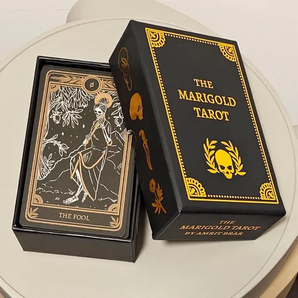

Sobre la baraja
El tarot es ua herramienta de itrospección que os invita a detenernos, observar y conectar con aquello que llevamos dentro. Nuestra baraja combina simbolismo tradicional con una estética contemporánea, creando una experiencia visual y personal para quienes quieren iniciarse en el tarot o profundizar en su práctica.
No necesitas saberlo todo. Solo necesitas escuchar.
Qué incluye?
- 78 Cartas de Tarot
- Guía de interpretación
- Estuche protector
- Diseño exclusivo
Cómo usar tu baraja?
- Conecta
- Formula tu pregunta
- Baraja
- Elige
- Interpreta
Busca un lugar tranquilo y toma unos minutos para concentrarte.
Piensa en aquello que quieres explorar. Las preguntas abiertas pueden ayudarte a reflexionar.
Mezcla las cartas mientras mantienes tu intención presente y en mente.
Extrae una o varias cartas según la tirada que hayas elegido.
Observa las imágenes, los símbolos y lo que cada carta despierta en ti.